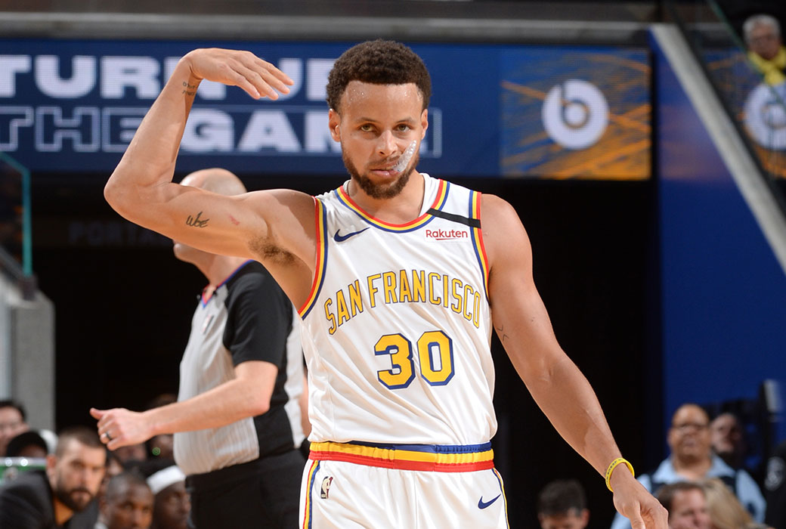
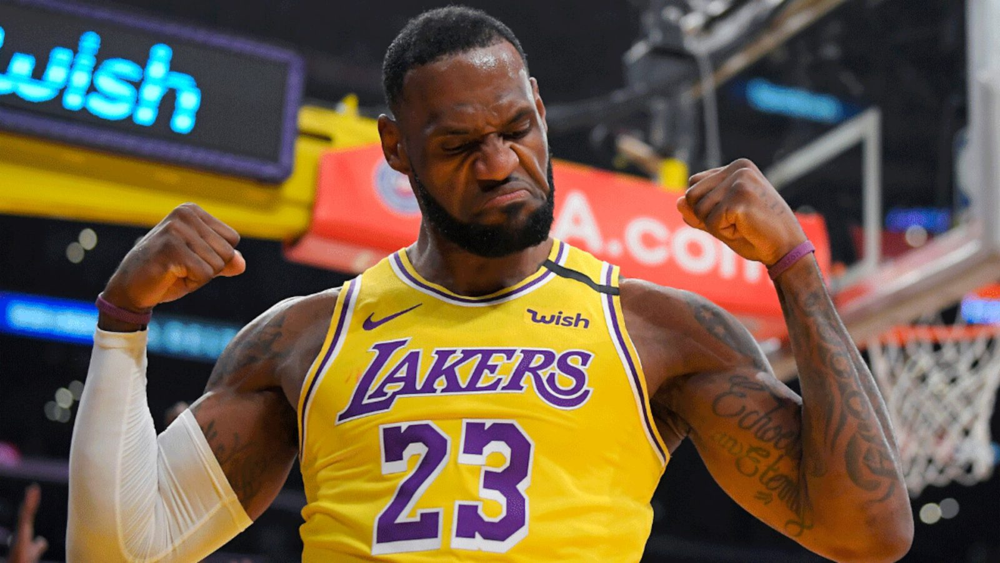
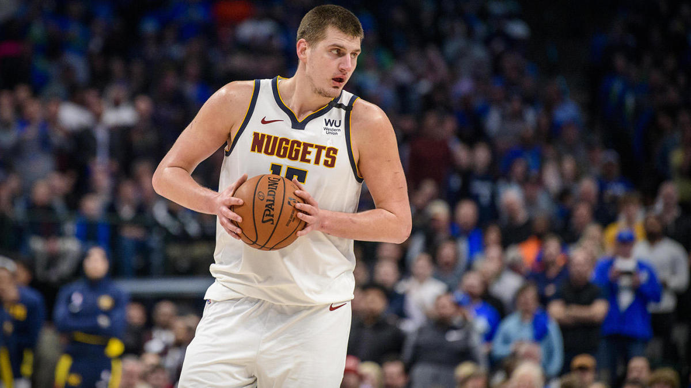

NBA All-Stars at Each Position
- POINT GUARD
- SHOOTING GUARD
- SMALL FORWARD
- POWER FORWARD
- CENTER
Stephen Curry
He is what a modern PG strives to be. He revolutionized basketball by introducing the strap; in basketball terms, that means the ability to be lethal from deep range. His offensive ability as a shooter sometimes hides his other PG abilities. Along with mastering the 3-pointer, he can make splendid assists.
James Harden
He is potentially the best scorer of this era. The beard can gets buckets with ease. His deadly step back gives him the space he needs to pull up from deep. He won MVP in 2018 and was an MVP candidate for three consecutive seasons for a reason. Other than scoring, he can set up his players for a better shot.
LeBron James
The king is undoubtedly the best player of the decade, or possibly, of all time. His versatility and longetivity is how he achieved many accomplishments. LeBron can bully his way to the paint, excellently pass the ball, shoot lights out, and lock up defenders. He consecutively went to the finals for 8 years and won 3 of them!
Giannis Antetokounmpo
He is a pure example of a power forward. The Greek Freak lurks in the paint waiting to receive the ball and dominate over anybody that blocks his way to the hoop. His length and strength make him the beast that he is. He won MVP for two years since he never stops working hard. When defending him in a fast break, defenders often let him get the easy dunk.
Nikola Jokic
The Joker is a modern type of center. His unique passing ability and ability to trick defenders despite his size makes him stand out among the other centers. He might be big and unable to block opponents as much as he should, but he makes up for it in offense. Jokic can potentially be a PG given his passing ability.
